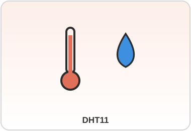

DHT11
Categoria: Temperatura e Umidade DigitalConceito
Sensor digital combinado de temperatura e umidade relativa do ar, de baixo custo, muito usado em projetos educacionais e estações meteorológicas simples.
Princípio de Funcionamento
Utiliza um termistor NTC para medir temperatura e um sensor capacitivo de umidade; um chip interno converte as leituras analógicas em um sinal digital de um único fio (protocolo proprietário de tempo).
| Especificação | Valor |
|---|---|
| Faixa de temperatura | 0°C a 50°C (±2°C) |
| Faixa de umidade | 20% a 90% UR (±5%) |
| Alimentação | 3V a 5V |
| Taxa de amostragem | 1 leitura/segundo |
Aplicações IoT/Industriais
Monitoramento de ambientes internos, estufas simples, estações meteorológicas amadoras e controle básico de climatização.
Exemplo de Uso
Conectado a um Arduino, o DHT11 envia leituras a cada 2 segundos para acionar um ventilador via relé quando a temperatura ultrapassa 28°C.
Fabricantes / Modelos
Aosong Electronics (fabricante do chip original); módulos vendidos por diversas marcas (Keyestudio, Adafruit, SparkFun).